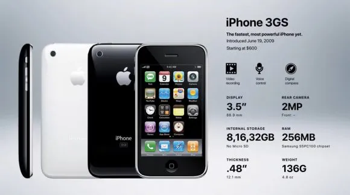

Generation 3: iPhone 3GS
iPhone 3GS Release Date: June 19, 2009
The iPhone 3GS was a major update to the original iPhone 3G. It had a faster processor, more memory, and a better camera. However, it still had many of the same features as the previous version. The "S" after "3G" was Apple's way of indicating that the phone was new, but that it was also a continuation of the previous model. The release of the iPhone 3GS marked a new beginning in iPhone history because it was the first iPhone to receive an interim update. This meant that Apple was now committed to releasing new iPhones on a regular basis, which helped to keep the iPhone at the forefront of the smartphone market.
Specification
- A 600 MHz processor with 256 MB RAM
- A 3.0-megapixel camera that allowed for video recording
- Bluetooth 2.1+EDR
- A digital compass
- 5 hours talk time or web browsing on 3G
- 12 hours talk time on 2G (up from 10)
- 9 hours of battery life on WiFi (up from 6)
- 10 hours of battery life for videos (up from 7)
- 30 hours of battery life for just music (up from 24)
- 16 GB ($199) 32 GB ($299) of internal memory (up from 8 or 16)
iPhone 3GS Carriers and Countries
- Botswana
- Brazil
- Bulgaria
- Cameroon
- Central African Republic
- Croatia
- Dominican Republic
- Egypt
- Guinea
- Indonesia
- Ivory Coast
- Jamaica
- Jordan
- Jordan
- Kenya
- Madagascar
- Mali
- Mauritius
- Nicaragua
- Niger
- Latvia
- Luxembourg
- Macedonia
- Malaysia
- Malta
- Mexico
- Moldova
- Montenegro
- Poland
- Russia
- Saudi Arabia
- South Africa
- Senegal
- Taiwan
- Thailand
- United Arab Emirates
- Venezuela